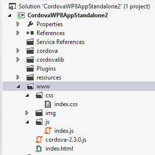

Windows Phone 7 プラットフォーム ガイド
このガイドは、Windows Phone 7 デバイス用の Cordova アプリを展開する SDK の開発環境を設定する方法を示します。 アプリも 7 Windows Phone 8 で利用可能な IE10 の高度な機能の一部が欠けているバージョンは、同じ Api を使用して Windows Phone 8 デバイス上で実行します。 Windows Phone 8 アプリはないWindows Phone 7 デバイス上で実行します。
詳細なプラットフォーム固有の情報を両方のバージョンに適用される次を参照してください。
上記のコマンド ライン ツールはコルドバ 3.0 より前のバージョンを参照してください。現在のインタ フェースについての情報は、コマンド ライン インターフェイスを参照してください。
1. システム要件
オペレーティング システム：
- Windows 7 または Windows 8 (Pro) または Windows Vista SP2 で
- 64 ビット バージョンの Windows の （64） が、SDK に必要です。
- デバイス エミュレーターを実行するため、Pro バージョンをお勧めします。
- Windows 7 または Windows 8 (Pro) または Windows Vista SP2 で
登録し、実際のデバイスでアプリをインストールまたは市場の場所に送信する場合にWindows Phone デベロッパー センターアカウントのお支払い。
注：SDK には、仮想マシンで実行されているいくつかの課題を提示可能性があります。 Mac 上の Windows Phoneを開発するソリューションに洞察力を与えるこのブログの記事を読むことができます。.
2. SDK + コルドバをインストールします。
ダウンロードして、 Windows Phone SDKのインストール
ダウンロードし、コルドバの最新のコピーを抽出します。 作業をして、
lib\windows-phone-8\wp7サブディレクトリ、lib\windows-phone-8\wp8コルドバの Windwos 電話 8 のバージョンが含まれています。コピー、
CordovaWP7_x_x_x.zipファイルを\My Documents\Visual Studio 2012\Templates\ProjectTemplates\ディレクトリ。
2.1 のテンプレートを作成します。
注：この手順は必要ありません。Lib\windows 携帯電話のディレクトリはすでにファイル CordovaWP7_x_x_x.zip が含まれている場合は、この手順をスキップ可能性があります。
開発プロセスを簡略化するためコルドバは Visual Studio テンプレートを作成するスクリプトが付属しています。 コルドバ Visual Studio アプリケーションを迅速に作成をできます。 必要な場合、このテンプレートを変更することができ、以下の手順、テンプレートを生成する場合を続行する方法を示します。
作成し、テンプレートをインストールするバッチ ファイルを実行します。
レポのルートには、ファイル createTemplates.bat が含まれています。 このファイルをダブルクリック 2 .zip ファイルが生成されます。 (CordovaWP7_x_x_x.zip + CordovaWP8_x_x_x.zip x.x.x は現在のバージョン番号)Visual Studio では、コピーこれらのファイルを簡単に使用するには、"私の Documents\Visual Studio 2012\Templates\ProjectTemplates\"をし、ことができます新しいプロジェクト メニュー-> Visual Studio ファイルから新しい Apache コルドバ Windows Phone アプリを作成します。
自動的にインストールするパラメーターで呼び出すことができますも、コマンドラインからバッチ ファイルを実行する場合
スクリプトを実行します。
> createTemplates.bat-インストール
3. 新しいプロジェクトをセットアップします。
Visual Studio Express の Windows Phone を開き、新しいプロジェクトを選択します.
CordovaWP7を選択します。(バージョン番号は、テンプレートの説明に表示されます。)
プロジェクト名を指定し、 [ok]を選択します.
4. プロジェクトの構造を確認します。
wwwディレクトリには、コルドバが含まれていますhtml/js/cssと、アプリに含まれるその他のリソース。Visual Studio プロジェクトの一部である必要がありますここで追加するコンテンツとコンテンツとして設定する必要があります。
メモ： この画面キャプチャは wp8 コルドバ 2.3.0 ダウンロードから、あなたのリストは異なります、実際のバージョンがインストールされています。

6. プロジェクトをビルドし、デバイスの
デバイス上でアプリケーションをテストするために、デバイスを登録する必要があります。 クリックしてここでを展開すると、Windows Phone 7 上でテスト ドキュメントを読みます。
あなたの携帯電話は接続され、画面がロックされていることを確認します。
Visual Studio では、上部のドロップ ダウン メニューから「デバイス」を選択します。
、デバッグを開始する主要なドロップ ダウン メニューの横に緑の再生ボタンを押すか、 f5 キーを押してください.